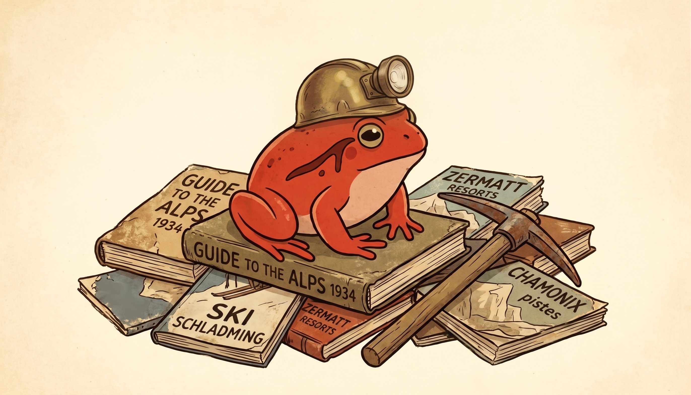

🎿 The Pond #13: Ski resorts, murder mysteries and Frisket
Also: how much Big Tech can you ditch? 🦵
by Ada Homolova · October 29, 2026

Hello my dear frosches! 🐸
Soo, October was a good one! We talked digital sovereignty with Santi and built agent harnesses with Johan. In November we continue straight ahead with another two fantastic speakers 🤩 I am hyped.
Read all about it below!
Happening at The Pond
⛏️ Mining analogue data on Wed 18 November, 14:30 CET · Event details
Constanze Bayer will illustrate on her story about the industrialization of ski resorts how you can make old guide books and other analog materials a data treasure trove. Come and learn about strategies and tools to extract information and organize data, and AI + non-AI tools that might be useful for extraction. Join us at The Pond!
🧮 Frisket: an AI-powered spreadsheet for investigations on Tue 24 November, 15:00 CET · Event details
Frisket is an open-source, AI-powered spreadsheet for investigative reporting. Throw in a disorganized mountain of PDFs, transcripts, audio, video, emails or spreadsheets, then use AI to search, sort, classify, and cross-reference your way through the mess! Instead of bouncing between Pinpoint, NotebookLM, pandas, and a half-dozen other tools, Frisket brings everything together into one (painfully complicated?) interface. Come see it in action!
Made at The Pond
🏰 Pondcast #10: Digital sovereignty: the recording of the session with Santi van den Toorn is up. We dig into what digital sovereignty actually looks like in practice, why we want it, and what stands in the way.
🪢 Pondcast #11: It’s all a harness, baby: Johan Schuijt showed us what an AI agent harness is, and then we built our own. If “harness” sounds mysterious, this one is for you.
🍒 Digital independence: start with the easy wins: the newest blog post, with Santi van den Toorn. Which Big Tech tools you can replace first (newsletters, e-signing, analytics, automation) and which ones take a whole project.
Mentorships
Want to level up your data skills with 1:1 personal attention and hands-on guidance? Book one, two, three or four 1:1 sessions at any time, and we can build each session around whatever you're working on.
What we're reading
🎪 The JournalismAI Festival programme is up: browse the schedule and block your calendar for the sessions that catch your eye.
🚪 Switch one app away from Big Tech: di.day publishes a new recipe on the first Sunday of every month. The EFF is at it too, with daily Opt Out October tips to protect your privacy and security.
✍️ Text watermarking in Python: AI companies now put watermarks on the text their models generate. Learn how that actually works.
🧊 playproj: model grids: all sorts of strange map projections, from rotated poles to cubed spheres and Yin-Yang, unfolded from the globe. Very cool.
✂️ A small model with the AI writing tics trained out: a Qwen3-4B fine-tuned on a MacBook Air that writes without em dashes, “not X, but Y” or lists of three. So the slop is, in fact, optional.
🍄 How to avoid AI brain rot: Miles Cranmer on keeping your own thinking sharp while AI does more and more of the work for you.
💀 SQL Murder Mystery: solve a murder with SQL queries, right in the browser. Good practice for beginners and experienced SQL sleuths alike.
Are you enjoying this newsletter? Let me know by hitting a reply on this email!
With 💚 and 🐸,
Ada
The Pond is a community by and for nerds in the newsroom. Join us!